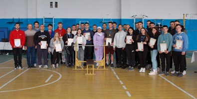

У передвісті Дня матері
БЛАГОУСТРІЙ КОЛЕДЖУ
ПЛАНОВІ ЗАСІДАННЯ
МІЖНАРОДНИЙ ДЕНЬ МЕДИЧНОЇ СЕСТРИ
МІЖНАРОДНИЙ ДЕНЬ ЗДОРОВ’Я РОСЛИН
АКЦІЯ «ВІДВІДАЙ… НИЗЬКО ПОКЛОНИСЬ…»
День пам’яті та примирення
Мотивація професійного вибору в дії
Найголовніше для агронома, — це любов до землі, любов до рослини, любов до природи
Благодійний турнір з волейболу серед молоді Новоушиччинни
Благодійний профорієнтаційний захід на підтримку ЗСУ
Екскурсія до пожежно-рятувальної частини
Робоча нарада кураторів академічних груп
МІЖНАРОДНИЙ ДЕНЬ АСТРОНОМІЇ
ВСЕСВІТНІЙ ДЕНЬ СВОБОДИ ПРЕСИ
ЗАСІДАННЯ СТУДЕНТСЬКОЇ РАДИ КОЛЕДЖУ
ТИЖДЕНЬ ОХОРОНИ ПРАЦІ
З ДНЕМ ПРИКОРДОННИКА УКРАЇНИ!
БЛАГОДІЙНО-ПРОФОРІЄНТАЦІЙНИЙ ЗАХІД на ПІДТРИМКУ ЗБРОЙНИХ СИЛ УКРАЇНИ
ГОДИНА ЗЕМЛІ: чому ми не можемо ігнорувати екологічні наслідки війни в Україні
Планове засідання методичного об’єднання кураторів академічних груп
ЧОРНОБИЛЬ НЕ ВІХОДИТЬ У МИНУЛЕ…
«ЗЕМЛЯ ДЛЯ НАС ТА ДЛЯ НАЩАДКІВ»
МОЛОДЬ ЗА ЧИСТЕ ДОВКІЛЛЯ
«Спорт гартує силу духу»

ЗНАЙОМСТВО СТУДЕНТСТВА З НОВИМИ ІМЕНАМИ УКРАЇНСЬКОГО КІНЕМАТОГРАФА
СТУДЕНТСЬКА НАУКОВО-ПРАКТИЧНА КОНФЕРЕНЦІЯ
«Моя професія-моя гордість»
БАТЬКІВСЬКІ ЗБОРИ
ДЕНЬ ВІДКРИТИХ ДВЕРЕЙ
ЗБОРИ СТУДЕНТІВ 4 КУРСУ
МЕТОДИЧНА РАДА КОЛЕДЖУ
Фотоконкурс-виставка «Моя нескорена Україна»
ВИСТАВКА ВЕЛИКОДНІХ ПАСОК
ПРЕДМЕТНИЙ ТИЖДЕНЬ
Презентація посібника "Основи органічного рослинництва"
ЗАСІДАННЯ МЕТОДИЧНОЇ РАДИ КОЛЕДЖУ
МО кураторів академічних груп коледжу
Україна – держава космічна
 В рамках тижня дисципліни «Фізика і астрономія» 12 квітня 2023 року відбулася студентська конференція на тему «Україна – держава космічна», присвячена Всесвітньому Дню авіації і космонавтики ...
В рамках тижня дисципліни «Фізика і астрономія» 12 квітня 2023 року відбулася студентська конференція на тему «Україна – держава космічна», присвячена Всесвітньому Дню авіації і космонавтики ...МИ ПАМ’ЯТАЄМО…
РОБОЧА ЗУСТРІЧ
Студентська конференція «ОСНОВИ ПСИХОЛОГІЧНИХ ЗНАНЬ В ПРОФЕСІЙНІЙ СФЕРІ» в рамках ТИЖНЯ ПСИХОЛОГІЇ
МОЛОДЬ ОБИРАЄ ЗДОРОВ’Я!
ЗНАЙ! ВИВЧАЙ! СПІЛКУЙСЯ РІДНОЮ МОВОЮ!
 На базі бібліотеки нашого коледжу відбулося чергове заняття курсів з української мови для ВПО. ...
На базі бібліотеки нашого коледжу відбулося чергове заняття курсів з української мови для ВПО. ...Вітаємо учасників Чемпіонату України з армресттлінгу, м. Львів
Методика і технології організації здорового й активного способу життя студентської молоді
ПРАЦЮЄМО НА РЕЗУЛЬТАТ
Міжнародний день моральності
Міжнародний день інтернету
ІІ Міжнародного заняття доброти
ШКОЛА ПЕДАГОГІЧНОЇ МАЙСТЕРНОСТІ
Інформаційно-просвітницькі з військово-правового спрямування для студентів ЗФПО
Вітаємо учасника Чемпіонату України з армрестлінгу
Урок-екскурсія
ПОЗАЧЕРГОВЕ ЗАСІДАННЯ ПЕДАГОГІЧНОЇ РАДИ
ЗАСІДАННЯ АТЕСТАЦІЙНОЇ КОМІСІЇ
Екологічна брутальність, як складова стратегії національного супротиву…
ДЕНЬ ГОСТИННОСТІ
ЗАСІДАННЯ ПЕДАГОГІЧНОЇ РАДИ
Пожежна безпека: як запобігти та домогти
ПРЕВЕНТИВНЕ ВИХОВАННЯ
Здобуваємо робітничі професії заради майбутнього України!
Бізнес з нуля : НАПИСАННЯ ТА ПРЕЗЕНТАЦІЯ БІЗНЕС- ПЛАНУ
Національно-патріотичне виховання студентської молоді як складова діяльності навчального закладу в умовах воєнного стану
Засідання методичної ради коледжу
ВСЕСВІТНІЙ ДЕНЬ ЗЕМЛІ
ВСТУПНА КАМПАНІЯ-2023 В ДІЇ!
РЕДАН - нова небезпечна субкультура
ДЕНЬ УКРАЇНСЬКОГО ДОБРОВОЛЬЦЯ
Професії, які ми обрали
ДЕНЬ ДЕРЖАВНОГО ГІМНУ УКРАЇНИ
ВІЧНО ЖИВИЙ
 Уся Україна шанує Тараса Григоровича Шевченка як свого найбільшого сина, як найбільшого оборонця свого народу, як найбільшого поета, як свій прапор і найбільший ідеал. ...
Уся Україна шанує Тараса Григоровича Шевченка як свого найбільшого сина, як найбільшого оборонця свого народу, як найбільшого поета, як свій прапор і найбільший ідеал. ...ШЕВЧЕНКІВСЬКІ ДНІ В КОЛЕДЖІ
8 Березня, чи День боротьби за права жінок…
ВСТУПНА КАМПАНІЯ - 2023 В ДІЇ!
 Головне завдання: популяризація навчального закладу, як складової системи освіти України. ...
Головне завдання: популяризація навчального закладу, як складової системи освіти України. ...ДЕНЬ ГОСТИННОСТІ: профорінтаційний благодійний захід на підтримку Збройних Сил України
ПЕРША ДОМЕДИЧНА ДОПОМОГА В УМОВАХ ВІЙНИ
Гостьова лекція "МАРКЕТИНГОВІ КОМУНІКАЦІЇ”
ПЕРША ДОМЕДИЧНА ДОПОМОГА В УМОВАХ ВІЙНИ
ЧЕМПІОНАТ ХМЕЛЬНИЦЬКОЇ ОБЛАСТІ З АРМРЕСТЛІНГУ
День інженерно-авіаційної служби авіації Збройних Сил України
АКЦІЯ «ВОЛОНТЕРСЬКА ОПІКА» в дії….
ЗАГАЛЬНОКОЛЕЖАНСЬКА ГОДИНА НЕЗЛАМНОСТІ
22 ЛЮТОГО 2023 року
МІЖНАРОДНИЙ ДЕНЬ РІДНОЇ МОВИ
 21 лютого відзначаємо Міжнародний день рідної мови – свято, засноване ЮНЕСКО в 1999 році. Головна мета цього дня – підтримати самобутність та важливість кожної мови та її важливість для народу. ...
21 лютого відзначаємо Міжнародний день рідної мови – свято, засноване ЮНЕСКО в 1999 році. Головна мета цього дня – підтримати самобутність та важливість кожної мови та її важливість для народу. ...Волонтерство як спосіб життя
Студентська онлайн-конференція
ДЕНЬ ДЕРЖАВНОГО ГЕРБА УКРАЇНИ
ВСТУПНА КАМПАНІЯ - 2023 В ДІЇ!
Пером і багнетом
НЕ ЗАБУВАЙТЕ ДАРУВАТИ ДОБРО!
З ДНЕМ ЄДНАННЯ, УКРАЇНО!
Ефективні методи та форми роботи куратора групи в умовах військового стану
HUMAN Школа - це сучасна освітня платформа: допомагає впроваджувати кращі світові інновації у сфері освіти.
ЗАСІДАННЯ АДМІНІСТРАТИВНОЇ РАДИ КОЛЕДЖУ
ЗАСІДАННЯ МЕТОДИЧНОЇ РАДИ КОЛЕДЖУ
Нехай живе кохання, крізь відстань і крізь час…
ВСЕСВІТНІЙ ДЕНЬ ШЛЮБУ
Віртуальна наукова конференція "Слід добрий і вічний на землі»
Міжнародний день жінок і дівчат у науці
НАВЧАЙСЯ ПРАЦЮЮЧИ
Відомий український авіаконструктор – ОЛЕГ АНТОНОВ
Міжнародний День безпечного Інтернету
Всесвітній день безпечного Інтернету
Методичне об’єднання кураторів академічних груп
Засідання адміністративної ради коледжу
Освіта в умовах війни: виклики та їх подолання
ПЕДАГОГІЧНА РАДА КОЛЕДЖУ
Бій під Крутами – бій за майбутнє України
НАПОЛЕГЛИВІСТЬ – запорука успіху!
СОБОРНІСТЬ УКРАЇНИ – це не лише про історію, це про наше сьогодення і майбутнє!
НАЙЩИРІШІ ВІТАННЯ З НОВОРІЧНИМИ ТА РІЗДВЯНИМИ СВЯТАМИ!
Підсумкове засідання педагогічної ради
ОСКАР-2023 стартував!
Підсумки навчально-виховної роботи в академічних групах коледжу
Адаптація молоді ВПО
Методичне засідання кураторів академічних груп
СТУДЕНТСЬКА МОЛОДЬ – МАЙБУТНЄ УКРАЇНИ!
ВОРКШОП СИЛА – ЄДНАННЯ ЧЕРЕЗ СПІЛЬНІ ДІЇ МОЛОДІ
Зимові свята в традиціях нашого народу
День вшанування учасників ліквідації наслідків аварії на Чорнобильській АЕС
ЗВИЧАЇ ТА ТРАДИЦІЇ МОГО НАРОДУ
Я ПРОТИ НАСИЛЬСТВА, А ТИ?
БЛАГОДІЙНИЙ КОНЦЕРТ НА ПІДТРИМКУ ЗСУ
МІЙ СВІТ – БЕЗ НАСИЛЬСТВА!
МІЖНАРОДНИЙ ДЕНЬ ПРАВ ЛЮДИНИ
Мамина хустка – як пам’ять роду… З Всесвітнім Днем української хустки!
СТАРТУВАЛА АКЦІЯ «Різдвяне печиво для ЗСУ»
ВСЕУКРАЇНСЬКИЙ ТИЖДЕНЬ ПРАВА
Свято мужності, героїзму і відваги З ДНЕМ ЗБРОЙНИХ СИЛ УКРАЇНИ
Міжнародний день волонтера:особливо актуальне свято сьогодення
Добрі справи та відкрите серце в ім’я ПЕРЕМОГИ!
Міжнародний день волонтера
Робоча нарада атестаційної комісії з питань атестації педагогічних працівників
ОСВІТА ДЛЯ ДОРОСЛИХ - ОСВІТА ПРОТЯГОМ ЖИТТЯ
ДО 300-РІЧЧЯ З ДНЯ НАРОДЖЕННЯ ГРИГОРІЯ СКОВОРОДИ
Сьогодні, 1 грудня – Всесвітній день боротьби зі СНІДом
ДЕКАДА ЕКОНОМІЧНИХ ДИСЦИПЛІН
Засідання методичного об’єднання кураторів
Практичний семінар «Формування екологічної культури особистості»
ВЕЛИКІ ІМЕНА В ІСТОРІЇ УКРАЇНИ ВЕЛИКІ ІМЕНА в ІСТОРІЇ НАШОГО КОЛЕДЖУ
Свіча незламності - свіча пам’яті…
Стартувала Всеукраїнська акція «16 днів проти насильства»
Відбувся обласний етап ХІІІ Міжнародного мовно-літературного конкурсу ім. Т.Шевченка
ВЕЛИКІ ІМЕНА В ІСТОРІЇ НАШОГО ЗАКЛАДУ
Щирі вітання з Днем працівника сільського господарства!
БЛАГОДІЙНИЙ КОНЦЕРТ
Виставка-конкурс «Ми у творчості знаходимо себе»
Заходи до 300-річчя від дня народження Григорія Сковороди
Студентська рада коледжу: реалії та перспективи діяльності
Олімпіади із загальноосвітніх дисциплін
Конкурс професійної майстерності «КРАЩИЙ ТРАКТОРИСТ-МАШИНІСТ СІЛЬСЬКОГОСПОДАРСЬКОГО ВИРОБНИЦТВА»
СТУДЕНТСЬКА ПРАКТИЧНА КОНФЕРЕНЦІЯ «ЕНЕРГОЗБЕРЕЖЕННЯ – ЦЕ ЩЕ ОДИН КРОК ДО ПЕРЕМОГИ УКРАЇНИ»
Збори трудового колективу та засідання педагогічної ради коледжу
ХХІІІ Міжнародний конкурс з української мови імені Петра Яцика
День української писемності та мови
ПОЕЗІЯ...ЦЕ ЗАВЖДИ НЕПОВТОРНІСТЬ…
ТРИМАЄМО ОСВІТНІЙ ФРОНТ! МИ ВИСТОЇМО! МИ ПЕРЕМОЖЕМО! ВСЕ БУДЕ УКРАЇНА!
«Сьогодні – знавці історії, а завтра – її творці»
Першість коледжу з ВОЛЕЙБОЛУ
ХІІІ Міжнародний мовно-літературний конкурс учнівської та студентської молоді імені Тараса Шевченка
 1 листопада студенти Відокремленого структурного підрозділу «Новоушицького фахового коледжу Закладу вищої освіти «Подільського державного університету» взяли участь у І етапі ХІІІ Міжнародного мовно-літературного конкурсу учнівської та студентської молоді імені Тараса Шевченка. ...
1 листопада студенти Відокремленого структурного підрозділу «Новоушицького фахового коледжу Закладу вищої освіти «Подільського державного університету» взяли участь у І етапі ХІІІ Міжнародного мовно-літературного конкурсу учнівської та студентської молоді імені Тараса Шевченка. ...Золота осінь у рідному краї
День АВТОМОБІЛІСТА
З Днем визволення України від гітлерівських окупантів!
Першість гуртожитку з тенісу
Інформаційно-просвітницькі години
«Зігрій солдата ЗСУ»
Чемпіонат області з армрестлінгу
 Студенти коледжу прийняли участь в чемпіонаті Хмельницької області з армрестлінгу серед дорослих чоловіків та жінок. ...
Студенти коледжу прийняли участь в чемпіонаті Хмельницької області з армрестлінгу серед дорослих чоловіків та жінок. ...Спортивні змагання
 Із 7 по 18 жовтня, прийнявши естафету від Олімпійського тижня, у коледжі тривали спортивні змагання серед студентів 1 курсу, присвячені дню Захисників та Захисниць України. ...
Із 7 по 18 жовтня, прийнявши естафету від Олімпійського тижня, у коледжі тривали спортивні змагання серед студентів 1 курсу, присвячені дню Захисників та Захисниць України. ...З Україною в серці
 Творчості, як і будь-якій іншій діяльності, можна навчитися. (Г.Альтшулер) ...
Творчості, як і будь-якій іншій діяльності, можна навчитися. (Г.Альтшулер) ...Як створити сприятливі психологічні умови для всіх учасників освітнього процесу
«Спорт гартує силу духу»
 В рамках заходів, присвячених ДНЮ захисників і захисниць України «Спорт гартує силу духу»
відбулась першість коледжу з пауерліфтингу. ...
В рамках заходів, присвячених ДНЮ захисників і захисниць України «Спорт гартує силу духу»
відбулась першість коледжу з пауерліфтингу. ...МОТОГУРТОК
Флешмоб «ЧИТАЄМО, МРІЄМО, ГУРТУЄМОСЯ"
Освіта протягом життя - головна прерогатива освітнього життя
МІЖНАРОДНИЙ ДЕНЬ ВЧИТЕЛІВ
Спорт гартує силу духу
АТЕСТАЦІЯ-2023
З Всеукраїнським Днем Бібліотек
81-роковини трагедії Бабиного Яру
АТЕСТАЦІЙНА КАМПАНІЯ - 2023
«Люди для лісу, ліс – для життя»
Біблотека - центр національно-патріотичного виховання студентів
Урок мужності та патріотизму
В ОСЕЛІ УКРАЇНЦЯ – ЗАВЖДИ ЧИСТО
ОСВІТА ДЛЯ ДОРОСЛИХ – ОСВІТА ПРОТЯГОМ ЖИТТЯ
Засідання стипендіальної комісії
Всеукраїнський тиждень з протидії булінгу
Засідання ШКОЛИ МОДОГО ВИКЛАДАЧА
ТРЕНУВАННЯ З ПИТАНЬ ЦИВІЛЬНОГО ЗАХИСТУ
ГУРТОЖИТОК - НАШ ДІМ
В здоровому тілі здоровий дух
Відбувся благодійний концерт на підтримку ЗСУ
МАЙСТЕР-КЛАС ПО ТОПІАРНІЙ (ФІГУРНІЙ) СТРИЖЦІ
Відправ монети на фронт: у коледжі стартувала благодійна акція Національного банку "Смілива гривня"
На порядку дня – АТЕСТАЦІЯ -2023
з Міжнародним днем студентського спорту!
Ви чуєте, до вас говорять книги!
АКЦІЯ З БЛАГОУСТРОЮ «ЗА ЧИСТЕ ДОВКІЛЛЯ»
ПЕРЕМОЖЦІ ПЕРШОГО ДНЯ СПАРТАКІАДИ 2019-2020н.р.:
Відкриття студентської спартакіади 2019-2020 н.р.
Щиро вітаю всіх Вас з Днем фізичної культури і спорту України!
Загальний рейтинг вступників-студентів 2019 року станом на 01.09.2019 року


ПСИХОЛОГІЧНІ ОСНОВИ ОПТИМІЗМУ
СТАРТУВАВ НОВИЙ 2019-2020н.р….
ТИЖДЕНЬ-ПЕРШОКУРСНИКА
 Читання як процес засвоєння знань», «Як працювати з підручником», «Орієнтири в світі інформації»
під такою назвою пройшов цикл бібліотечно –бібліографічних уроків в читальному залі бібліотеки коледжу...
Читання як процес засвоєння знань», «Як працювати з підручником», «Орієнтири в світі інформації»
під такою назвою пройшов цикл бібліотечно –бібліографічних уроків в читальному залі бібліотеки коледжу...ПЕРШИЙ УРОК 2019-2020н.р.
1 ВЕРЕСНЯ – ДЕНЬ ЗНАНЬ!
Дорогі студенти! Вітаємо усіх у дружній університетській родині!
Шановні працівники Новоушицького коледжу ПДУТУ, викладачі, студенти та батьки!
ПІДГОТОВКА МАТЕРІАЛЬНО-ТЕХНІЧНОЇ БАЗИ ДО НОВОГО НАВЧАЛЬНОГО РОКУ
ПРИЙМАЛЬНА КОМІСІЯ ІНФОРМУЄ
Випуск 2019
ВІТАЄМО З ПЕРЕМОГОЮ: студент Новоушицького коледжу ПДАТУ ввійшов в «десятку»!!!
Зустріч випускників 1979 року
Педагогічна рада
Перші наукові кроки
МІЙ КРАЙ У ФОТООБ’ЄКТИВІ
 Конкурс проводився з метою виявлення у молодого покоління творчих здібностей та
вміння відображати неповторну красу пейзажних мотивів рідного краю...
Конкурс проводився з метою виявлення у молодого покоління творчих здібностей та
вміння відображати неповторну красу пейзажних мотивів рідного краю...Усний журнал «Кам’янець на Поділлі»
 Перша сторінка журналу «Кам’янець – перлина Поділля» розкрила перед слухачами
красу і неповторність « квітки на камені» - саме так з любов’ю називають місто...
Перша сторінка журналу «Кам’янець – перлина Поділля» розкрила перед слухачами
красу і неповторність « квітки на камені» - саме так з любов’ю називають місто... Круглий стіл
«З покоління в покоління»
Брей-ринг
Уроки олімпіади з інформатики
Науково-практична конференція «ВИДАТНІ ВЧЕНІ Подільського ДАТУ»